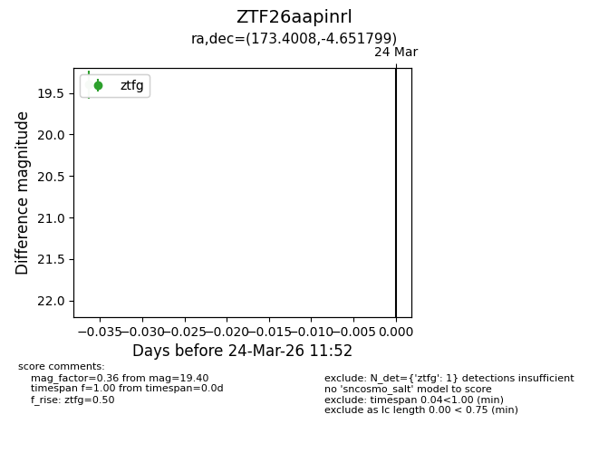
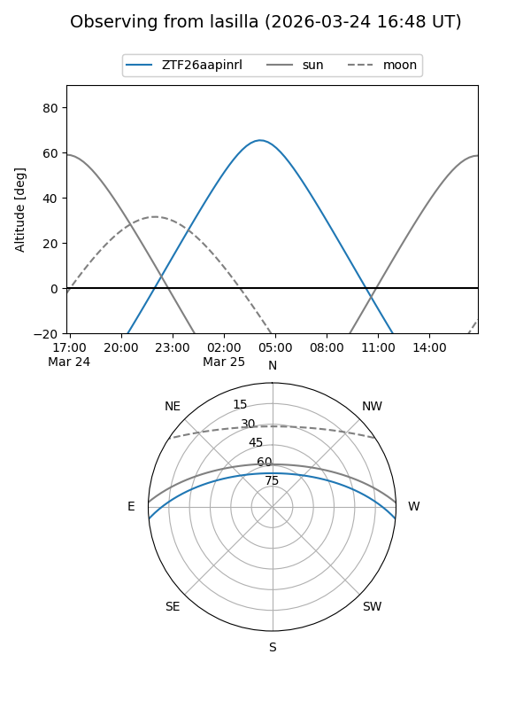
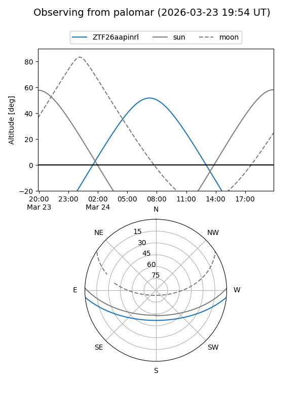

ZTF26aapinrl
Target ZTF26aapinrl at 2026-03-24 11:55
Aliases and brokers:
FINK: link
Lasair: link
ALeRCE: link
alt names
ZTF26aapinrl (ztf,fink_ztf)
Coordinates:
equatorial (ra, dec) = 173.4008,-4.65180
equatorial (HMS+DMS) = 11:33:36.19,-04:39:06.48
galactic (l, b) = (269.3824,+53.07373)
Flags:
Photometry:
last ztfg=19.40
1 ztfg detections
Lightcurve

Visibility


Additional plots